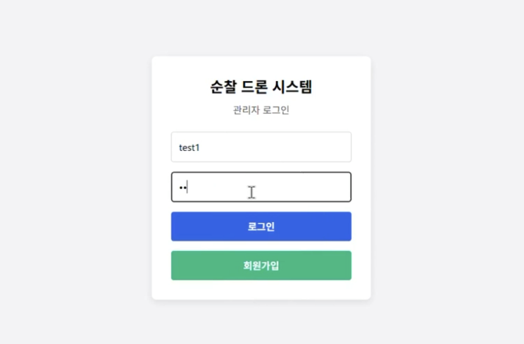
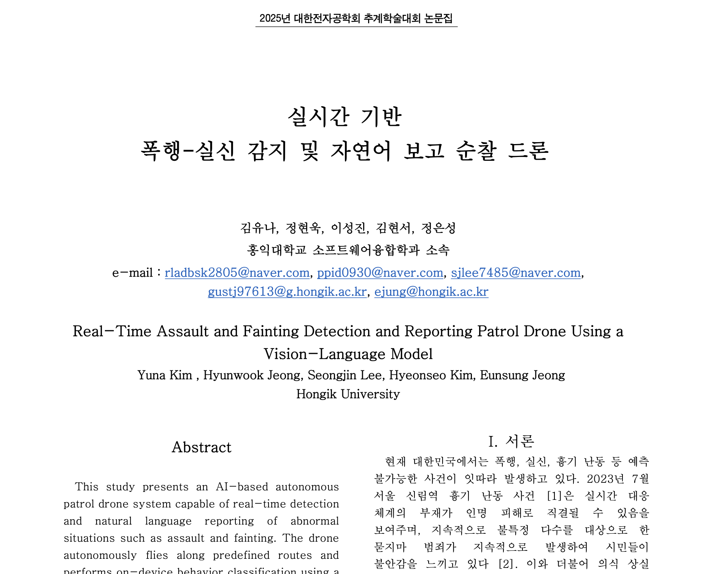
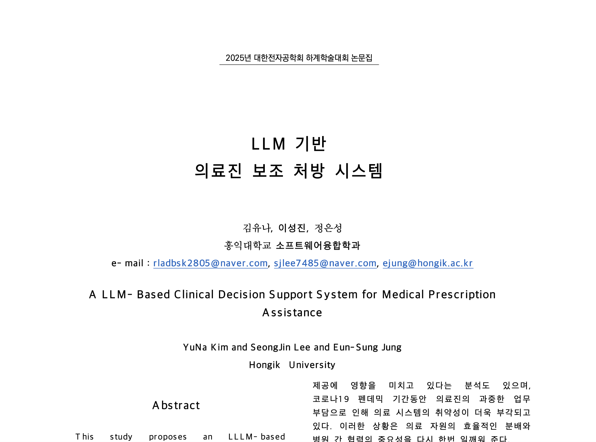
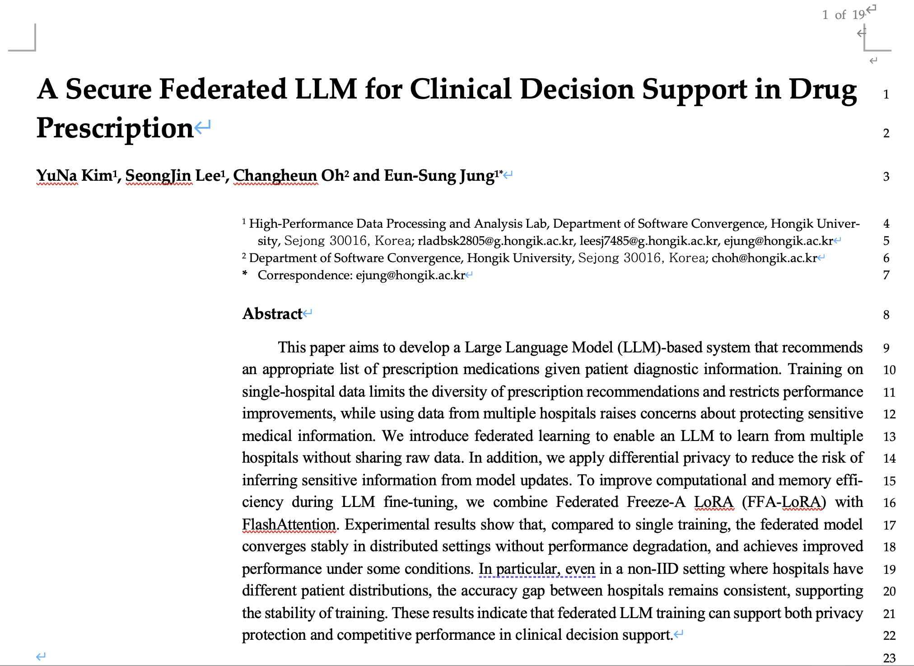
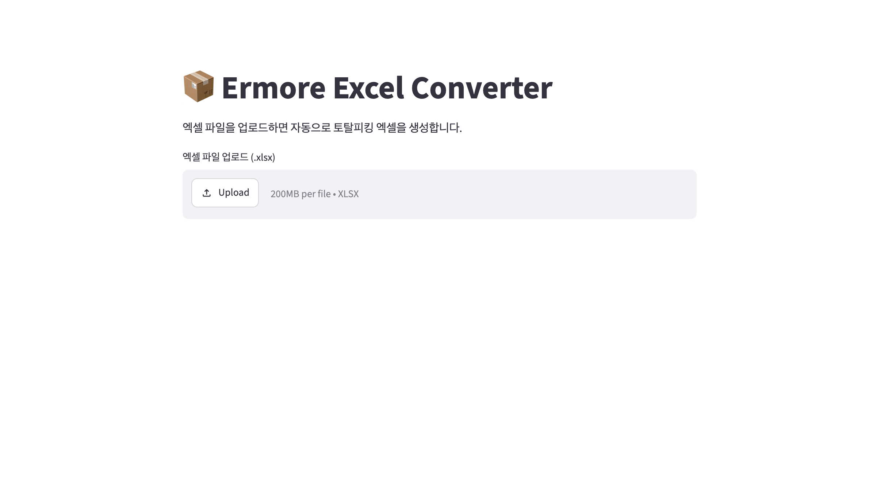
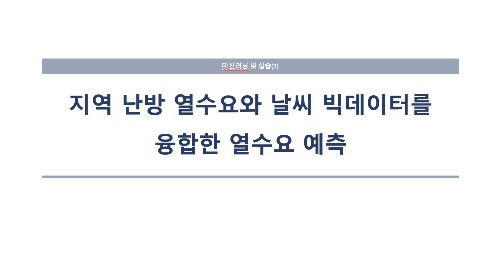
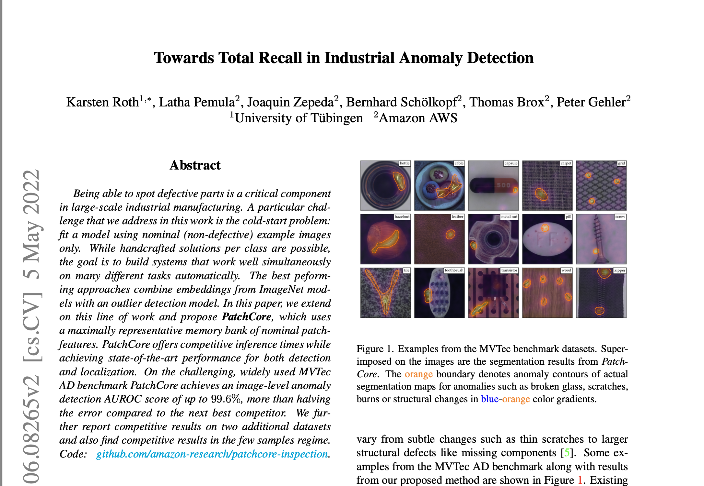
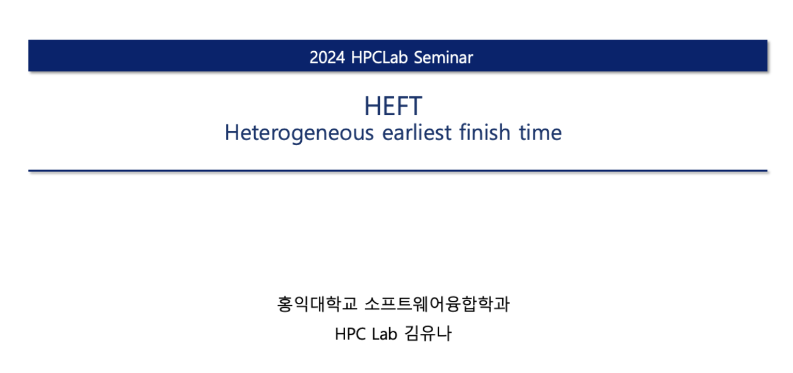
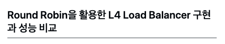
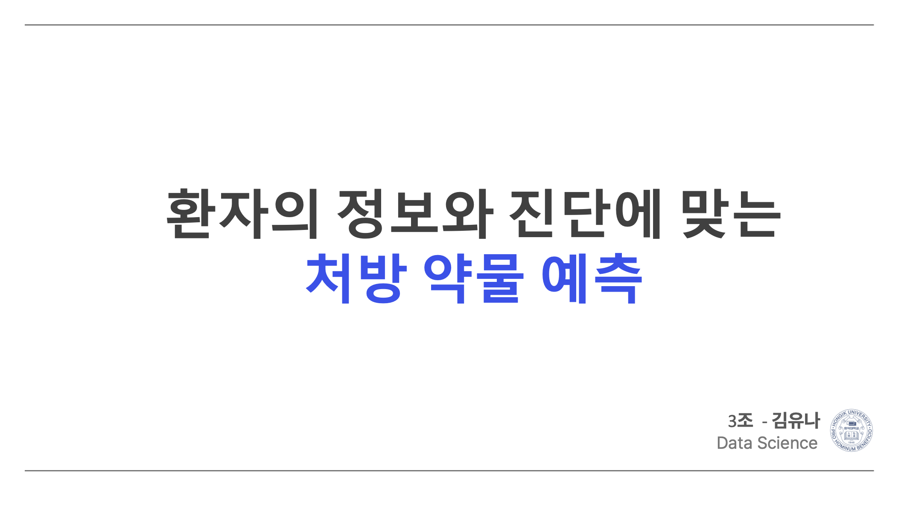

자율 순찰 드론 서비스 웹페이지 구현
관리자가 드론을 활용해 원하는 지역을 자율 순찰할 수 있도록 지원하는 웹 서비스를 구현했습니다.
역할 : UI Design / Backend / DB / Server Integration / Deployment
구분 : 팀 프로젝트
(2022.03 ~ 현재) 홍익대학교 소프트웨어융합학과
(2025.12) OPIc
(2026.03) SQLD
(2026.06) 정보처리기사
(2024.06 ~ 2025.12) 홍익대학교 High-Performance Data Processing & Analysis Lab 학부 연구생
(2024.09 ~ 2024.12) 바이오헬스 UROP 연구 수행
(2025.09 ~ 2025.12) UROP 연구 수행
(2025.05) 대한전자공학회 하계 학술대회 논문 채택
(2025.10) 대한전자공학회 추계 학술대회 논문 채택
(2024.12) 디지털 바이오헬스 종합 설계 경진대회 참가
(2025.03 ~ 2025.05) 자기주도학습 동아리 활동
(2025.09 ~ 2025.12) 세종시 그랜드 캡스톤 참가
(2025.11) 소프트웨어융합학과 제 22회 학술제 4등 수상
각 기술의 활용도를 최대 3개의 ⭐로 표시하며, 각각 상/중/하 를 나타냅니다.
언어 및 프레임워크
데이터베이스 / 서버
기타

관리자가 드론을 활용해 원하는 지역을 자율 순찰할 수 있도록 지원하는 웹 서비스를 구현했습니다.
역할 : UI Design / Backend / DB / Server Integration / Deployment
구분 : 팀 프로젝트

드론에 Jetson과 카메라를 탑재하여 자율 주행 중 수집한 영상을 폭행·실신·정상 상황으로 분류하고, 이상상황 발생 시 5초 영상과 상황 설명 텍스트를 관리자에게 전송하는 AI 기반 순찰 시스템을 구현했습니다.
역할 : Data Preprocessing / VLM Fine-tuning & Situation Text Generation
구분 : 팀 프로젝트

환자의 진단 정보를 기반으로 적절한 처방 약물 리스트를 생성하는 LLM 기반 의료진 보조 시스템을 구축하고, MIMIC-IV 데이터 전처리, 프롬프트 구성, Llama3.1-8B-Instruct 파인튜닝, FlashAttention2 적용, Human/GPT-4 기반 평가를 수행한 프로젝트입니다.
역할 : Data Preprocessing / Prompt Design / LLM Fine-tuning / FlashAttention2 / Human & GPT-4 Evaluation / Result Analysis
구분 : 팀 프로젝트

기존 LLM 기반 의료진 보조 처방 시스템을 확장하여, MIMIC-IV 의료 데이터를 병원 단위로 분할하고 연합학습과 차등 프라이버시를 적용해 개인정보를 보호하면서도 안정적인 처방 약물 추천 성능을 검증한 연구입니다.
역할 : Data Preprocessing / Federated Learning / LLM Fine-tuning / Differential Privacy / Evaluation / Paper Writing
구분 : 팀 프로젝트

반복적인 엑셀 정리 업무의 불편함을 해결하기 위해, 업로드한 엑셀 파일을 Python으로 읽고 원하는 형식으로 자동 변환한 뒤 새로운 엑셀 파일로 다운로드할 수 있는 Streamlit 기반 자동화 서비스를 구현했습니다.
역할 : Python Automation / Excel Processing / Streamlit Deployment / Service Implementation
구분 : 개인 프로젝트

2025 날씨 빅데이터 콘테스트 참가 프로젝트로, 지역난방 열수요와 기상 빅데이터를 융합하여 시간·계절 주기성과 지사별 특성을 반영한 LSTM·GRU 기반 시간 단위 열수요 예측 모델을 구축했습니다.
역할 : Data Preprocessing / Feature Engineering / Correlation Analysis / Time-Series Modeling
구분 : 팀 프로젝트

비지도 이미지 이상탐지 논문 PatchCore를 분석하고, 공식 구현 코드를 기반으로 알고리즘의 동작 원리를 이해한 뒤 실제 데이터셋에 적용하여 anomaly score와 anomaly map을 확인한 재현 실험 프로젝트입니다.
역할 : Paper Study / Reproduction / Image Anomaly Detection / Experiment Analysis
개인 : 팀 프로젝트

이기종 GPU 환경에서 LLM 학습 시간을 단축하기 위해 HEFT 스케줄링 알고리즘을 구현·검증하고, 실제 다중 GPU 학습에 적용하여 기존 AUTO 분할 대비 약 3시간의 학습 시간 단축을 확인한 프로젝트입니다.
역할 : HEFT Algorithm Implementation / GPU Scheduling / LLM Layer Placement / Experiment Analysis
구분 : 개인 프로젝트

Round Robin 알고리즘을 적용한 L4 Load Balancer를 직접 구현하고, 로드밸런싱 적용 여부에 따른 요청 성공률, 응답 시간, 서버별 부하 분산 차이를 네트워크 시뮬레이션 환경에서 비교 분석한 프로젝트입니다.
역할 : Network Simulation Integration / Experiment Design / Performance Analysis
구분 : 팀 프로젝트

MIMIC-IV 의료 데이터를 기반으로 환자 정보와 진단에 맞는 처방 약물 예측 문제를 정의하고, 로지스틱 회귀, LASSO, LDA, Random Forest, SVM 등 다양한 머신러닝 모델의 성능을 비교·분석한 프로젝트입니다.
역할 : Data Preprocessing / Model Training / Performance Comparison / Result Analysis
구분 : 개인 프로젝트